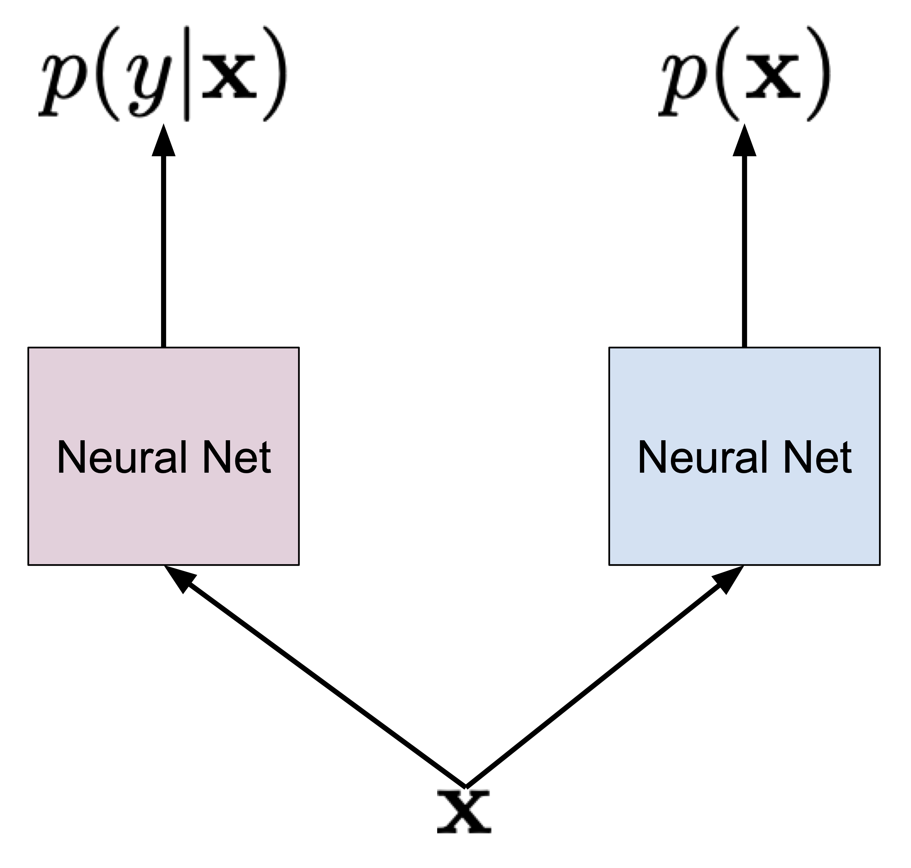
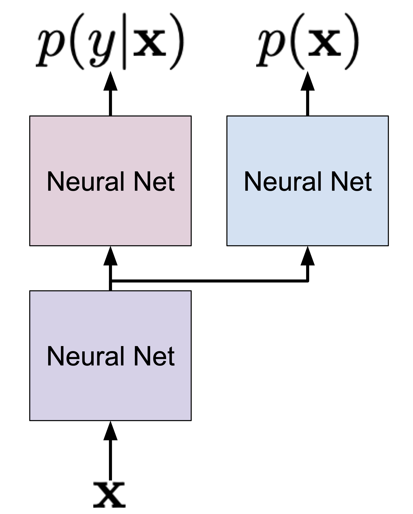
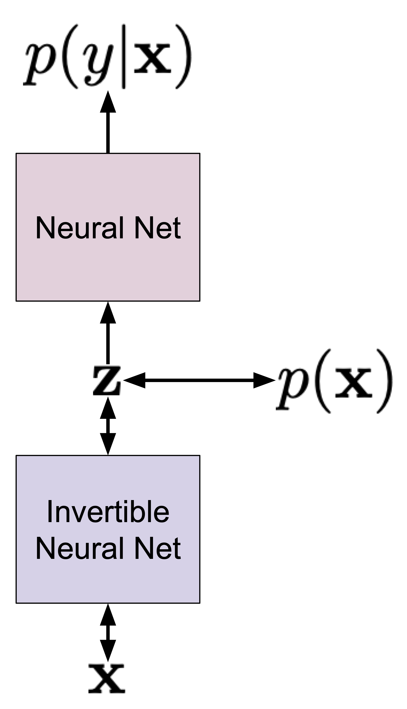
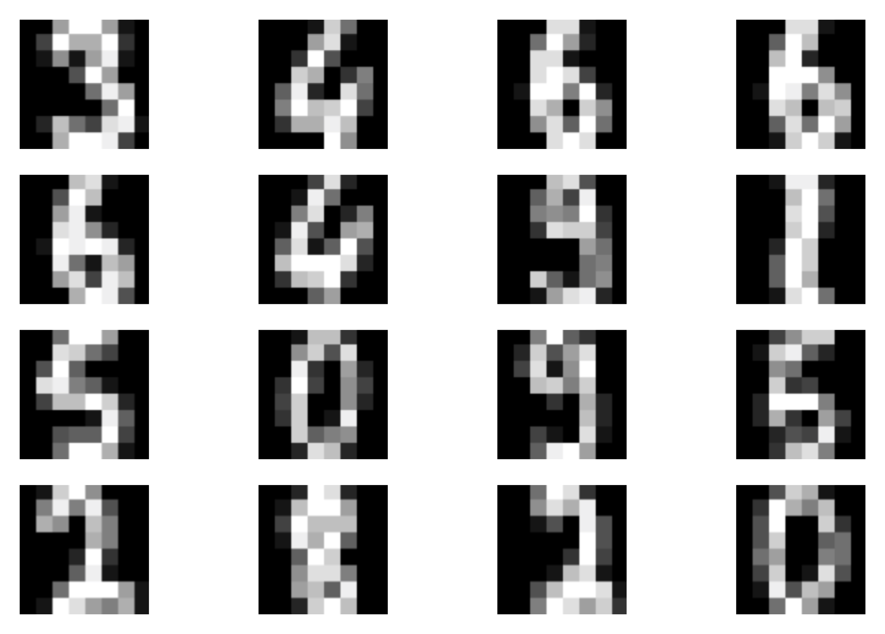
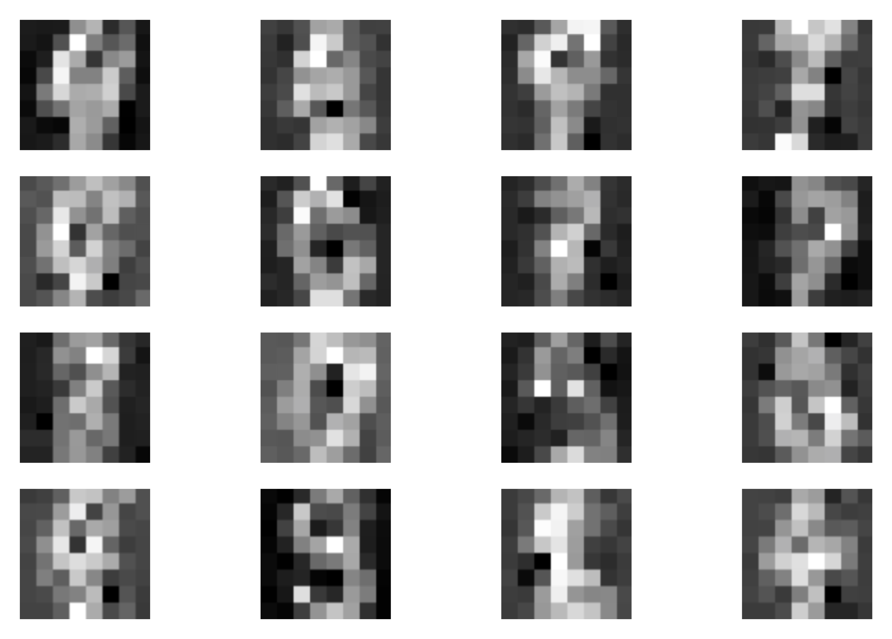
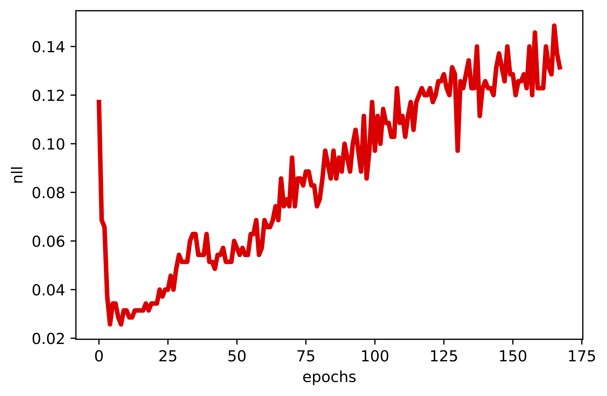
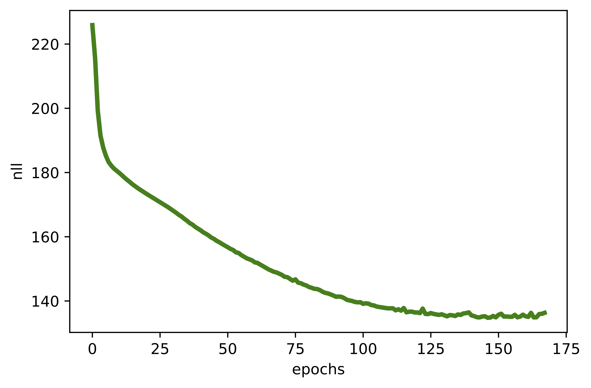

In the first post, I tried to convince you that learning the conditional distirbution $p(y|\mathbf{x})$ is not enough and, instead, we should focus on the joint distribution $p(\mathbf{x}, y)$ factorized as follows:
$$ p(\mathbf{x}, y) = p(y|\mathbf{x}) p(\mathbf{x}) . $$Why? Let me remind you of the reasoning: The conditional $p(y|\mathbf{x})$ does not allow us to say anything about $\mathbf{x}$ but, instead, it will give its best to provide a decision. As a result, I can provide an object that has never been observed so far, and $p(y|\mathbf{x})$ could still be pretty certain about its decision (i.e., assigning high probability to one class). On the other hand, once we have trained $p(\mathbf{x})$, we should be able to, at least in theory, access the probability of the given object. And, eventually, determine whether our decision is reliable or not.
In the previous posts, we completely focused on answering the question on how to learn $p(\mathbf{x})$. Since we had in mind the necessity of using it for evaluating the probability, we discussed only the likelihood-based models, namely, the autoregressive models (ARMs), the flow-based models (flows), and the Variational Auto-Encoders (VAEs). Now, the naturally arising question is how to use a deep generative model with a classifier (or a regressor) together. Let us focus on a classification task for simplicity and think of possible approaches.
Let us start with some easy, naive almost approach. In the most straightforward way, we can train $p(y|\mathbf{x})$ and $p(\mathbf{x})$ separately. And that's it, we have a classifier and a marginal distribution over objects. This approach is schematically presented in Figure 1 where we use different colors (purple and blue) to highlight that we use two different neural networks to parameterize the two distributions.

Figure 1. A naive approach to learning the joint distribution by considering both distributions separately.
Let us write down the logarithm of the joint distribution:
$$ \ln p(\mathbf{x}, y) = \ln p_{\alpha}(y|\mathbf{x}) + \ln p_{\beta}(\mathbf{x}), $$where $\alpha$ and $\beta$ denote parameterizations of both distributions (i.e., neural networks). Once we start training and calculate gradients with respect to $\alpha$ and $\beta$, we clearly see that we get:
$$ \nabla_{\alpha} \ln p(\mathbf{x}, y) = \nabla_{\alpha} \ln p_{\alpha}(y|\mathbf{x}) + \underbrace{\nabla_{\alpha} \ln p_{\beta}(\mathbf{x})}_{= 0}, $$because $\ln p_{\beta}(\mathbf{x})$ is not dependent on $\alpha$,
$$ \nabla_{\beta} \ln p(\mathbf{x}, y) = \underbrace{\nabla_{\beta} \ln p_{\alpha}(y|\mathbf{x})}_{=0} + \nabla_{\beta} \ln p_{\beta}(\mathbf{x}), $$because $\ln p_{\alpha}(y|\mathbf{x})$ does not depend on $\beta$.
In other words, we can simply first train $p_{\alpha}(y|\mathbf{x})$ using all data with labels, and then train $p_{\beta}(\mathbf{x})$ using all available data. So what is a potential pitfall with this approach? Intuitively, we can say that there is no guarantee that both distributions treat $\mathbf{x}$ in the same manner and, thus, could introduce their errors. Moreover, due to stochasticity during training, there is no information flow between random variables $\mathbf{x}$ and $y$ and, as a result, the neural networks seek for own (local) minima during training. To use a metaphor, they are like two wings of a bird that move in total separation, asynchronously.
Moreover, training both models separately is also inefficient. We must use two different neural networks, with no weight sharing. Since training is stochastic, we really could worry about potential bad local optima and our worries are even doubled now.
Would such an approach fail? Well, it's not a simple question. Probably, it could work pretty well even, but it might lead to models far from optimal ones. Either way, who likes being unclear about training models? At least not me.
Alright, so since I whine about sharing the parameterization, it is obvious that the second approach uses (drums here)... a shared parameterization! To be more precise, a partially shared parameterization is depicted in Figure 2 (the shared neural network is in purple).

Figure 2. An approach to learning the joint distribution by using a partially shared parameterization.
Now, the logarithm of the joint distribution is the following:
$$ \ln p(\mathbf{x}, y) = \ln p_{\alpha, \gamma}(y|\mathbf{x}) + \ln p_{\beta, \gamma}(\mathbf{x}), $$where it is worth highlighting that both distributions partially share the parameterization $\gamma$ (i.e., the purple neural network). As a result, during training, there is an obvious information sharing between $\mathbf{x}$ and $y$! Intuitively, both distributions operate on a processed $\mathbf{x}$, and then this representation is specialized to give probabilities for classes and objects.
Again, one might ask what is all fuzz about?! First of all, now the two distributions are tightly connected. Like in the metaphor of a bird used before, now both wings can move together. Second, from the optimization perspective, the gradients flow through the $\gamma$ network, and, thus, it contains information about both $\mathbf{x}$ and $y$. This may greatly help in finding a better solution.
At the first glance, there is nothing wrong in learning the model expressed as:
$$ \ln p(\mathbf{x}, y) = \ln p_{\alpha, \gamma}(y|\mathbf{x}) + \ln p_{\beta, \gamma}(\mathbf{x}). $$However, let us think about dimensionalities of $y$ and $\mathbf{x}$. For instance, if $y$ is binary, then we have one single bit representing a class label. For a binary vector of $\mathbf{x}$, we have $D$ bits. Hence, there is a clear discrepancy in scales! Let us take a look at the gradient with respect to $\gamma$:
$$ \nabla_{\gamma} \ln p(\mathbf{x}, y) = \nabla_{\gamma} \ln p_{\alpha, \gamma}(y|\mathbf{x}) + \nabla_{\gamma} \ln p_{\beta, \gamma}(\mathbf{x}). $$If we think about it, during training, the $\gamma$ network obtains a much stronger signal from $\ln p_{\beta, \gamma}(\mathbf{x})$. Following our example of binary variables, let's say our neural nets return all probabilities equal $0.5$, so for the independent Bernoulli variables we get:
\begin{align*} \ln Bern(y|0.5) &= y \ln 0.5 + (1-y) \ln 0.5\\ &= - \ln 2. \end{align*}where we use the property of the logarithm ($\ln 0.5 = \ln 2^{-1} = - \ln 2$) and it doesn't matter what is the value of $y$ because the neural network returns $0.5$ for $y=0$ and $y=1$, and similarly for $\mathbf{x}$:
\begin{align*} \ln \prod_{d=1}^{D} Bern(x_{d}|0.5) &= \sum_{d=1}^{D} \ln Bern(x_{d}|0.5) \\ &= - D\ln 2 . \end{align*}Therefore, we see that the $\ln p_{\beta, \gamma}(\mathbf{x})$ part is $D$-times stronger than the $\ln p_{\alpha, \gamma}(y|\mathbf{x})$ part! How does it influence the final gradients during training? Think about it for a while and consider the information flow through $\gamma$. Do you see it? Yes, the $\gamma$ neural network will obtain more information from the marginal distribution that could cripple the classification part. In other words, our final model will be always biased towards the marginal part. Can we do something about it? Fortunately, yes!
In (Bouchard & Triggs, 2004) it is proposed to consider the convex combination of $\ln p(y|\mathbf{x})$ and $\ln p(\mathbf{x})$ as the objective function, namely:
$$ \mathcal{L}(\mathbf{x},y;\lambda) = (1 - \lambda) \ln p(y|\mathbf{x}) + \lambda \ln p(\mathbf{x}) $$where $\lambda \in [0, 1]$. Unfortunately, this weighting scheme is not derived from a well-defined distribution and it breaks the elegance of the likelihood-based approach. However, if you don't mind being inelegant, then this approach should work well!
A different approach is proposed in (Nalisnick et al., 2019) where only $\ln p(\mathbf{x})$ is weighted:
$$ \ell(\mathbf{x},y;\lambda) = \ln p(y|\mathbf{x}) + \lambda \ln p(\mathbf{x}) $$where $\lambda \ge 0$. This kind of weighting was proposed in various forms before (e.g., see (Kingma et al., 2014), (Tulyakov et al., 2017)). Still, the fudge factor $\lambda$ is not derived from a probabilistic perspective. However, (Nalisnick et al., 2019) argue that we can interpret $\lambda$ as a way of encouraging robustness to input variations. They also mention that scaling $\ln p(\mathbf{x})$ can be seen as a Jacobian-based regularization penalty. It is still not a valid distribution (because it is equivalent to $p(\mathbf{x})^{\lambda}$), but at least could be interpreted nicely.
In (Nalisnick et al., 2019), the hybrid modeling idea has been pursued with $p(\mathbf{x})$ being modeled by flows (in the paper they used GLOW) and then, the resulting latents $\mathbf{z}$ were used as an input to the classifier. In other words, a flow-based model is used for $p(\mathbf{x})$ and the invertible neural network (e.g., consisting of coupling layers) is shared with the classifier. Then, the final layers on top of the invertible neural network are used to make a decision $y$. The objective function is $\ell(\mathbf{x},y;\lambda)$ as defined before. The approach is schematically presented in Figure 3.

Figure 3. Hybrid modeling using invertible neural networks and flow-based models.
There are a couple of interesting properties of such an approach. First, we can use the invertible neural network for both the generative and discriminative parts of the model. Hence, the flow-based model is well-informed about the label. Second, the weighting $\lambda$ allows controlling whether the model is more discriminative or more generative. Third, we can use any flow-based model! (Nalisnick et al., 2019) used GLOW, however, (Chen et al., 2019) used residual flows, and (Perugachi-Diaz et al., 2021) applied invertible DenseNets. Fourth, as presented by (Nalisnick et al., 2019), we can use any classifier/regressor, e.g., Bayesian classifiers.
A potential drawback of this approach lies in the necessity of determining $\lambda$. This is an extra hyperparameter that requires tuning. Moreover, as noticed in previous papers (Nalisnick et al., 2019; Chen et al., 2019; Perugachi-Diaz et al., 2021), the value of $\lambda$ drastically changes the performance of the model from discriminative to generative. That is an open question how to deal with that.
Above, we discussed using GLOW or other continuous flow-based generative model. Let us consider a fully-connected neural network to model the conditional distribution $p(y|\mathbf{x})$, namely:
$$ \mathbf{z} \rightarrow \mathrm{Linear}(D, M) \rightarrow \mathrm{ReLU} \rightarrow \mathrm{Linear}(M, M) \rightarrow \mathrm{ReLU} \rightarrow \mathrm{Linear}(M, K) \rightarrow \mathrm{Softmax} $$where $D$ is the dimensionality of $\mathbf{x}$ and $K$ is the number of classes. The softmax gives us probabilities for each class. Remember that $\mathbf{z} = f^{-1}(\mathbf{x})$ and $f$ is an invertible neural network!
Next, we model $p(\mathbf{x})$ by applying the change of variables formula, namely:
$$ p(\mathbf{x}) = \pi\left(\mathbf{z} = f^{-1}(\mathbf{x})\right)\ |\mathbf{J}_{f}(\mathbf{x})|^{-1} $$where $\mathbf{J}_{f}(\mathbf{x})$ denotes the Jacobian of the transformation (i.e., neural network) $f$ evaluated at $\mathbf{x}$.
In our example, we use the categorical distribution for the conditional $p(y|\mathbf{x})$:
$$ p(y|\mathbf{x}) = \prod_{k=1}^{K} \theta_{k}(\mathbf{x})^{[y=k]} , $$where $\theta_{k}(\mathbf{x})$ is the softmax value for the $k$-th class, and $[y=k]$ is the Iverson bracket (i.e., $[y=k] = 1$ if $y$ equals $k$, and $0$ - otherwise).
In the case of the flow, we typically use $\pi(\mathbf{z}) = \mathcal{N}(\mathbf{z}|0,1)$, i.e., the standard Gaussian distribution. Plugging these all information to the objective of the hybrid modeling $\ell(\mathbf{x},y;\lambda)$, we get:
$$ \ell(\mathbf{x},y;\lambda) = \sum_{k=1}^{K} [y=k] \ln \theta_{k,g,f}(\mathbf{x}) + \lambda\ \mathcal{N}(\mathbf{z} = f^{-1}(\mathbf{x})|0,1) - \ln |\mathbf{J}_{f}(\mathbf{x})| . $$where we additionally highlight that $\theta_{k,g,f}$ is parameterized by two neural networks: $f$ from the flow and $g$ for the final classification.
Now, if we would like to follow (Nalisnick et al., 2019), we could pick coupling layers as the components of $f$ and, eventually, we would model $p(\mathbf{x})$ using RealNVP or GLOW, for instance. However, we want to be more fancy and we will utilize Integer Discrete Flows (IDFs) (van den Berg et al., 2020; Hoogeboom et al., 2019). Why? Because we simply can and also IDFs don't require calculating the Jacobian. Besides, we can practice a bit formulating hybrid models.
Let's quickly recall IDFs. First, they operate on $\mathbb{Z}^{D}$, i.e., integers. Second, we need to pick an appropriate $\pi(\mathbf{z})$ that in this case is the discretized logistic (DL), $\mathrm{DL}(z|\mu, \nu)$. Since the change of variable formula for discrete random variables does not require calculating the Jacobian (remember: no change of volume here!), we can rewrite the hybrid modeling objective as follows:
$$ \ell(\mathbf{x},y;\lambda) = \sum_{k=1}^{K} [y=k] \ln \theta_{k,g,f}(\mathbf{x}) + \lambda\ \mathrm{DL}(\mathbf{z} = f^{-1}(\mathbf{x})|\mu,\nu) . $$That's it! Congratulations, if you follow all these steps, you have arrived at a new hybrid model that uses IDFs to model a distribution of $\mathbf{x}$. Notice that now the classifier takes integers as input.
Now, we have all components to implement our own Hybrid Integer Discrete Flow (HybridIDF)! Below, there is a code with a lot of comments that should help to understand every single line of it. The full code (with auxiliary functions) that you can play with is available here: [link].
class HybridIDF(nn.Module):
def __init__(self, netts, classnet, num_flows, alpha=1., D=2):
super(HybridIDF, self).__init__()
print('HybridIDF by JT.')
# Here we use twe two options discussed previously: a coupling layer or a generalized invertible transformation
# These formulate the transformation f.
# NOTE: Please pay attention to a new variable here, namely, beta. This is the rezero trick used in (van den Berg et al., 2020).
if len(netts) == 1:
self.t = torch.nn.ModuleList([netts[0]() for _ in range(num_flows)])
self.idf_git = 1
self.beta = nn.Parameter(torch.zeros(len(self.t)))
elif len(netts) == 4:
self.t_a = torch.nn.ModuleList([netts[0]() for _ in range(num_flows)])
self.t_b = torch.nn.ModuleList([netts[1]() for _ in range(num_flows)])
self.t_c = torch.nn.ModuleList([netts[2]() for _ in range(num_flows)])
self.t_d = torch.nn.ModuleList([netts[3]() for _ in range(num_flows)])
self.idf_git = 4
self.beta = nn.Parameter(torch.zeros(len(self.t_a)))
else:
raise ValueError('You can provide either 1 or 4 translation nets.')
# This contains extra layers for classification on top of z.
self.classnet = classnet
# The number of flows (i.e., f's).
self.num_flows = num_flows
# The rounding operator.
self.round = RoundStraightThrough.apply
# The mean and log-scale for the base distribution pi.
self.mean = nn.Parameter(torch.zeros(1, D))
self.logscale = nn.Parameter(torch.ones(1, D))
# The dimensionality of the input.
self.D = D
# Since using "lambda" is confusing for Python, we will use alpha in the code for lambda in previous equations (not confusin at all, right?!)
self.alpha = alpha
# We use the built-in PyTorch loss function. It is for educational purposes! Otherwise, we could use the log-categorical.
self.nll = nn.NLLLoss(reduction='none') #it requires log-softmax as input!!
# The coupling layer as introduced before.
# NOTE: We use the rezero trick!
def coupling(self, x, index, forward=True):
if self.idf_git == 1:
(xa, xb) = torch.chunk(x, 2, 1)
if forward:
yb = xb + self.beta[index] * self.round(self.t[index](xa))
else:
yb = xb - self.beta[index] * self.round(self.t[index](xa))
return torch.cat((xa, yb), 1)
elif self.idf_git == 4:
(xa, xb, xc, xd) = torch.chunk(x, 4, 1)
if forward:
ya = xa + self.beta[index] * self.round(self.t_a[index](torch.cat((xb, xc, xd), 1)))
yb = xb + self.beta[index] * self.round(self.t_b[index](torch.cat((ya, xc, xd), 1)))
yc = xc + self.beta[index] * self.round(self.t_c[index](torch.cat((ya, yb, xd), 1)))
yd = xd + self.beta[index] * self.round(self.t_d[index](torch.cat((ya, yb, yc), 1)))
else:
yd = xd - self.beta[index] * self.round(self.t_d[index](torch.cat((xa, xb, xc), 1)))
yc = xc - self.beta[index] * self.round(self.t_c[index](torch.cat((xa, xb, yd), 1)))
yb = xb - self.beta[index] * self.round(self.t_b[index](torch.cat((xa, yc, yd), 1)))
ya = xa - self.beta[index] * self.round(self.t_a[index](torch.cat((yb, yc, yd), 1)))
return torch.cat((ya, yb, yc, yd), 1)
# The permutation layer.
def permute(self, x):
return x.flip(1)
# The flow transformation: forward pass...
def f(self, x):
z = x
for i in range(self.num_flows):
z = self.coupling(z, i, forward=True)
z = self.permute(z)
return z
# ... and the inverse pass.
def f_inv(self, z):
x = z
for i in reversed(range(self.num_flows)):
x = self.permute(x)
x = self.coupling(x, i, forward=False)
return x
# A new function: This is used for classification. First we predict probabilities, and then pick the most probable value.
def classify(self, x):
z = self.f(x)
y_pred = self.classnet(z) #output: probabilities (i.e., softmax)
return torch.argmax(y_pred, dim=1)
# An auxiliary function: We use it for calculating the classification loss, namely, the negative log-likelihood for p(y|x).
# NOTE: We first apply the invertible transformation f.
def class_loss(self, x, y):
z = self.f(x)
y_pred = self.classnet(z) #output: probabilities (i.e., softmax)
return self.nll(torch.log(y_pred), y)
def sample(self, batchSize):
# sample z:
z = self.prior_sample(batchSize=batchSize, D=self.D)
# x = f^-1(z)
x = self.f_inv(z)
return x.view(batchSize, 1, self.D)
# The log-probability of the base distribution (a.k.a. prior).
def log_prior(self, x):
log_p = log_integer_probability(x, self.mean, self.logscale)
return log_p.sum(1)
# Sampling from the base distribution.
def prior_sample(self, batchSize, D=2):
# Sample from logistic
y = torch.rand(batchSize, self.D)
x = torch.exp(self.logscale) * torch.log(y / (1. - y)) + self.mean
# And then round it to an integer.
return torch.round(x)
# The forward pass: Now, we use the hybrid model objective!
def forward(self, x, y, reduction='avg'):
z = self.f(x)
y_pred = self.classnet(z) #output: probabilities (i.e., softmax)
idf_loss = -self.log_prior(z)
class_loss = self.nll(torch.log(y_pred), y) #remember to use logarithm on top of softmax!
if reduction == 'sum':
return (class_loss + self.alpha * idf_loss).sum()
else:
return (class_loss + self.alpha * idf_loss).mean()
# The number of invertible transformations
num_flows = 2
# Here, we present only for the option 1 IDF.
nett = lambda: nn.Sequential(nn.Linear(D // 2, M), nn.LeakyReLU(),
nn.Linear(M, M), nn.LeakyReLU(),
nn.Linear(M, D // 2))
netts = [nett]
# And a three-layered classifier.
classnet = nn.Sequential(nn.Linear(D, M), nn.LeakyReLU(),
nn.Linear(M, M), nn.LeakyReLU(),
nn.Linear(M, K),
nn.Softmax(dim=1))
# Init HybridIDF
model = HybridIDF(netts, classnet, num_flows, D=D, alpha=alpha)
And we are done, this is all we need to have! After running the code (take a look at: [link]) and training the HybridIDFs, we should obtain results similar to the following:
A  B  C  D 
Figure 5. Examples of outcomes of the training: A Randomly selected real images. B Unconditional generations from the HybridIDF. C An example of a validation curve for the classification error. D An example of a validation curve for the negative log-likelihood, i.e., $-\ln p(\mathbf{x})$.
Hybrid VAE The hybrid modeling idea goes beyond using flows for $p(\mathbf{x})$. Instead, we can pick VAE and then, after applying the variational inference, we get a lower bound to the hybrid modeling objective:
$$ \tilde{\ell}(\mathbf{x}, y; \lambda) = \ln p(y|\mathbf{x}) + \lambda\ \mathbb{E}_{\mathbf{z} \sim q(\mathbf{z}|\mathbf{x})}\left[ \ln p(\mathbf{x}|\mathbf{z}) + \ln p(\mathbf{z}) - \ln q(\mathbf{z}|\mathbf{x}) \right] . $$where $p(y|\mathbf{x})$ uses the encoder inside, $q(\mathbf{z}|\mathbf{x})$.
Semi-supervised hybrid learning The hybrid modeling perspective is perfectly suited to the semi-supervised scenarion. For the labeled data, we can use the objective $\ell(\mathbf{x},y;\lambda) = \ln p(y|\mathbf{x}) + \lambda \ln p(\mathbf{x})$. However, for the unlabeled data, we can simply consider only the $\ln p(\mathbf{x})$ part. Such approach was used by (Ilse et al., 2020) for VAEs.
A very interesting perspective to learning semi-supervised VAE was presented in (Joy et al., 2020). The authors end up with an objective that resemblances the hybrid modeling objective but without the cumbersome $\lambda$!
The factor $\lambda$ As mentioned before, the fudge factor $\lambda$ could be troublesome. First, it does not follow form a proper probability distribution. Second, it must be tuned that is always extra trouble... But, as mentioned before, (Joy et al., 2020) showed that we can get rid of $\lambda$!
New parameterizations An interesting open research direction is whether we can get rid of $\lambda$ by using a different learning algorithm and/or other parameterization (e.g., some neural networks). I strongly believe it is possible and, one day, we will get there!
Is this a good factorization? I am almost sure that some of you wonders whether this factorization of the joint, i.e., $p(\mathbf{x}, y) = p(y|\mathbf{x})\ p(\mathbf{x})$ is indeed better than $p(\mathbf{x}, y) = p(\mathbf{x}|y)\ p(y)$. If I were to sample $\mathbf{x}$ from a specific class $y$, then the latter is better. However, if you go back to the very first post, you will notice that I don't care about generating. I prefer to have a good model that will assign proper probabilities to the world. That's why I prefer $p(\mathbf{x}, y) = p(y|\mathbf{x})\ p(\mathbf{x})$.
(van den Berg et al., 2020) van den Berg, R., Gritsenko, A. A., Dehghani, M., Sønderby, C. K., & Salimans, T. (2020). IDF++: Analyzing and Improving Integer Discrete Flows for Lossless Compression. arXiv preprint arXiv:2006.12459.
(Bouchard & Triggs, 2004) Bouchard, G., & Triggs, B. (2004). The tradeoff between generative and discriminative classifiers. In 16th IASC International Symposium on Computational Statistics (COMPSTAT'04) (pp. 721-728).
(Chen et al., 2019) Chen, R. T., Behrmann, J., Duvenaud, D., & Jacobsen, J. H. (2019). Residual flows for invertible generative modeling. arXiv preprint arXiv:1906.02735.
(Hoogeboom et al., 2019) Hoogeboom, E., Peters, J. W., Berg, R. V. D., & Welling, M. (2019). Integer discrete flows and lossless compression. arXiv preprint arXiv:1905.07376.
(Ilse et al., 2020) Ilse, M., Tomczak, J. M., Louizos, C., & Welling, M. (2020). Diva: Domain invariant variational autoencoders. In Medical Imaging with Deep Learning (pp. 322-348). PMLR.
(Joy et al., 2020) Joy, T., Schmon, S. M., Torr, P. H., Siddharth, N., & Rainforth, T. (2020). Rethinking Semi-Supervised Learning in VAEs. arXiv preprint arXiv:2006.10102.
(Kingma et al., 2014) Kingma, D. P., Rezende, D. J., Mohamed, S., & Welling, M. (2014). Semi-supervised learning with deep generative models. arXiv preprint arXiv:1406.5298.
(Lasserre et al., 2006) Lasserre, J. A., Bishop, C. M., & Minka, T. P. (2006, June). Principled hybrids of generative and discriminative models. In 2006 IEEE Computer Society Conference on Computer Vision and Pattern Recognition (CVPR'06) (Vol. 1, pp. 87-94). IEEE.
(Perugachi-Diaz et al., 2021) Perugachi-Diaz, Y., Tomczak, J. M., & Bhulai, S. (2021). Invertible DenseNets with Concatenated LipSwish. arXiv preprint arXiv:2102.02694.
(Nalisnick et al., 2019) Nalisnick, E., Matsukawa, A., Teh, Y. W., Gorur, D., & Lakshminarayanan, B. (2019). Hybrid models with deep and invertible features. In International Conference on Machine Learning (pp. 4723-4732). PMLR.
(Tulyakov et al., 2017) Tulyakov, S., Fitzgibbon, A., & Nowozin, S. (2017). Hybrid VAE: Improving deep generative models using partial observations. arXiv preprint arXiv:1711.11566.